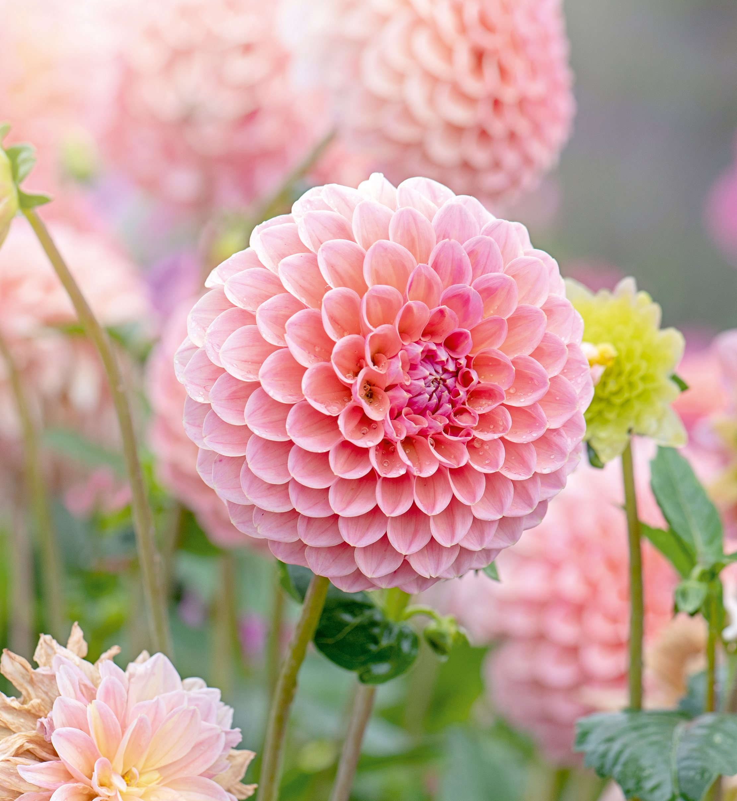

Amazing Health Benefits of Flowers
Flowers increase energy.
Having fresh flowers and/or potted plants around the home or office is linked to an increase in positive energy. The color and scent, specifically, boost energy. Additionally, flowers and plants are proven to increase creativity (they’re linked to an increase in positive energy). Place plants or flowers in a crafting space or any place where a mental boost would be helpful. Sit by a potted plant when reading or doing puzzles or brain exercises. Enjoy the view and benefits of increased mental energy.
-
Flowers aid relaxation
The act of tending to flowers and plants can be relaxing, and gardening can specifically be a healthy way to work through stress or frustration. Also, the scent of flowers is known to aid relaxation, thus sachets and bath products are often floral. (Who doesn’t love a lavender-scented bath or candle?) Consider how often people visit a garden to relax. Though we may not understand the science behind it, it’s tough to deny that gardens aid in relaxation.
-
Flowers improve memory.
Science says it can! Plants and flowers oxygenate the air, boosting brain cells, which improves memory, clarity and concentration. Think of plants and flowers as superfood for the brain cells!
-
Flowers can help improve mood.
At the most basic level, receiving flowers from someone can help lift a mood because it means someone cares, and that is always impactful. But even if the flowers are bought or planted and enjoyed by the same person, they can help improve mood because they look nice and smell good – two factors that are scientifically proven to provide an emotional boost. And an improved mood often leads to improved health
Popular Types of Flowers
-
DahliaIn
in a rainbow of colors, dahlia flowers range from two-inch blooms to giant blossoms that measure up to 15 inches. Most types grow four to five feet tall.
 -
Aster
Blooming in late summer and early fall, asters come with a bright yellow center and a variety of petal hues, including blue, purple, pink, and white. They attract bees and butterflies and are an important source of late-season nectar.
-
Delphinium
Delphiniums are known for their large spikes of colorful flowers in bright shades of blue, pink, white, and purple. They’re more challenging to grow than other types of flowers because they don’t like hot, dry weather.

-
Calla Lily
Calla lilies come in a variety of different colors, from snow white to bright pink. They feature a beautiful trumpet shape with smooth, sword-like foliage.